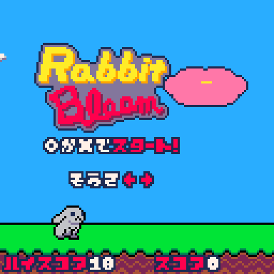
Rabbit Bloom : 2Dアクション・ミニゲーム
複雑度 : ★☆☆☆☆
難易度 : ★☆☆☆☆
制作時期 : 2022年12月 (5日間)
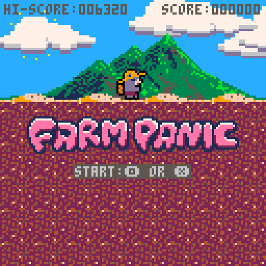
FARM PANIC : 2Dアクション・ミニゲーム
複雑度 : ★☆☆☆☆
難易度 : ★★☆☆☆
制作時期 : 2022年1月 (3日間)
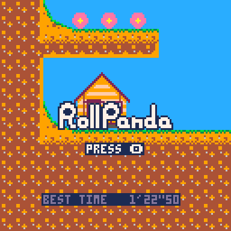
Roll Panda : 2Dアクション・タイムアタック
複雑度 : ★★☆☆☆
難易度 : ★★★★☆
制作時期 : 2021年6月-7月 (2ヵ月)
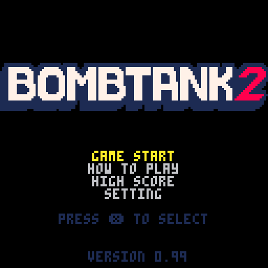
BOMBTANK2 : 2Dアクション・探索
複雑度 : ★★☆☆☆
難易度 : ★★★★☆
制作時期 : 2021年2月-3月 (2ヵ月)
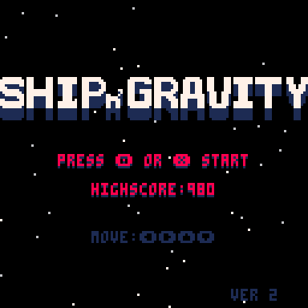
SHIP 'n GRAVITY : 2DSTG・重力・ゲームジャム「宇宙」
複雑度 : ★★★☆☆
難易度 : ★★★★☆
制作時期 : 2021年2月 (3日間)
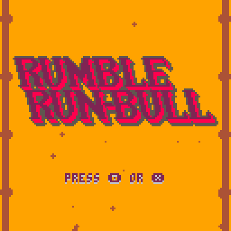
RUMBLE RUN-BULL : 2Dアクション・ランゲーム・ゲームジャム「かける」
複雑度 : ★☆☆☆☆
難易度 : ★☆☆☆☆
制作時期 : 2021年1月 (1週間)
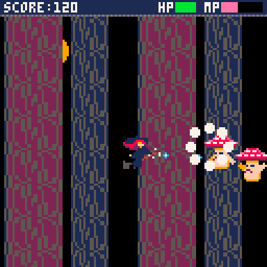
Luccica the Witch : 2DSTG・コマンドアクション
複雑度 : ★★★★☆
難易度 : ★★★★★
制作時期 : 2020年8月 (1カ月)
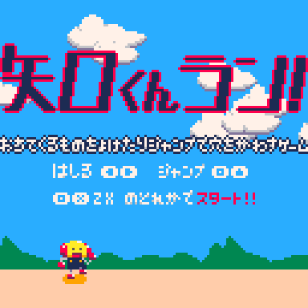
矢口くんラン : 2Dアクション・ランゲーム・オンライン理工展参加記念
複雑度 : ★☆☆☆☆
難易度 : ★★★☆☆
制作時期 : 2020年8月 (1週間)
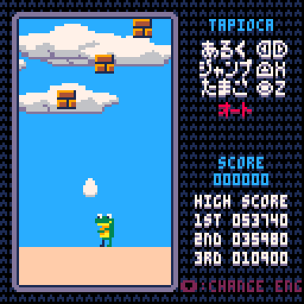
tapioca2 : 2Dアクション・落ち物
複雑度 : ★☆☆☆☆
難易度 : ★★☆☆☆
制作時期 : 2020年8月 (2週間)
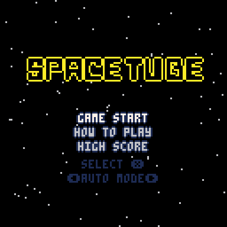
SPACETUBE : 2Dアクション・STG
複雑度 : ★★★☆☆
難易度 : ★★★☆☆
制作時期 : 2020年6月 (2週間)
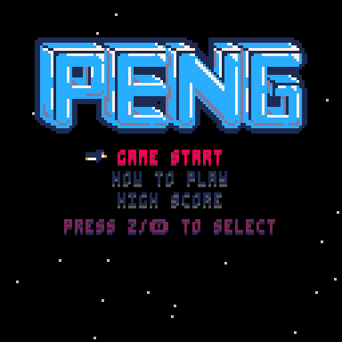
PENG : 2Dアクション・避けゲー・ペンギン
複雑度 : ★★☆☆☆
難易度 : ★★★☆☆
制作時期 : 2019年12月 (2週間)
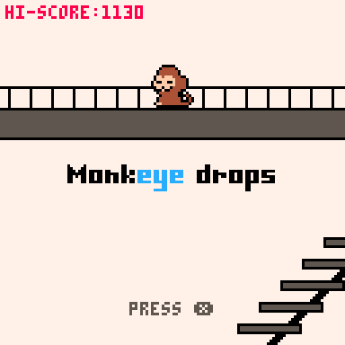
Monkeye drops : ミニゲーム・ゲームジャム「ことわざ」
複雑度 : ★★☆☆☆
難易度 : ★★★☆☆
制作時期 : 2022年8月 (3日間)
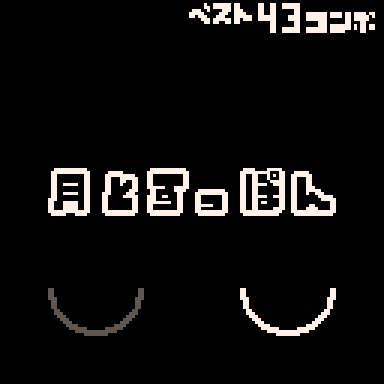
月とすっぽん : カジュアル・ゲームジャム「ことわざ」
複雑度 : ★☆☆☆☆
難易度 : ★☆☆☆☆
制作時期 : 2022年8月 (5時間)